网络模块初始化和网络设备
Table of Contents
1. 网络模块的初始化
涉及的文件：
- include/linux/init.h，初始化相关的宏定义。
- include/asm-generic/vmlinux.lds.h，编译连接相关宏定义。
- init/main.c，启动时的高级初始化。
- net/core/dev.c，网络设备的注册、输入和输出等接口。
- drivers/net/e100.c，e100驱动程序。
1.1. 初始化顺序
start_kernel();
...
trap_init();
rcu_init();
init_IRQ();
...
rest_init();
rest_init();
kernel_thread(init, NULL, CLONE_FS | CLONE_SIGHAND);
......
init();
......
do_basic_setup();
......
do_basic_setup();
init_workqueues();
usermodehelper_init();
driver_init();
sysctl_init();
do_initcalls();
有关网络的初始化过程主要由do_initcalls()完成，其不只是对网络模块进行初始化，只要是运用了initcall技术的模块都会被初始化。
每个内核模块都必须提供两个函数： module_init和module_exit()，前者在内核加载模块的时候被调用以初始化模块，后者在内核卸载模块时调用，用来释放该模块资源。
例如e100网络设备驱动（drivers/net/ethernet/intel/e100.c）：
module_param(debug, int, 0); module_param(eeprom_bad_csum_allow, int, 0); module_param(use_io, int, 0); MODULE_PARM_DESC(debug, "Debug level (0=none,...,16=all)"); MODULE_PARM_DESC(eeprom_bad_csum_allow, "Allow bad eeprom checksums"); MODULE_PARM_DESC(use_io, "Force use of i/o access mode"); //... static int __init e100_init_module(void) {} static void __exit e100_cleanup_module(void) {} //... module_init(e100_init_module); module_exit(e100_cleanup_module);
1.2. 优化基于宏的标记
| 宏 | 使用宏的函数说明 |
|---|---|
| __init | 启动时初始化函数，再启动阶段执行，通常只执行一次。后期不再需要，这种函数在初始化完成后被从内存中清除 |
| __exit | 和__init匹配，相关内核组件卸载时调用 |
| early_initcall | |
| core_initcall | |
| postcore_initcall | |
| arch_initcall | |
| subsys_initcall | 用于标记启动时需要执行的初始化函数 |
| fs_initcall | |
| rootfs_initcall | |
| device_initcall | |
| late_initcall | |
| __initcall | device_initcall的别名 |
| __exitcall | 标识退出函数，相关内核组建卸载时调用，通常仅用于标记module_exit函数 |
| 宏 | 使用宏的数据结构说明 |
|---|---|
| __initdata | 仅在启动时用于已初始化的数据结构 |
| __exitdata | 仅被由__exitcall修饰的函数使用的数据结构 |
1.3. 网络设备处理层初始化
| 文件 | 初始化函数及宏 | 说明 |
|---|---|---|
| net/socket.c | core_initcall(sock_init) | 套接口层的初始化函数 |
| net/core/sock.c | subsys_initcall(proto_init) | 传输层的初始化函数 |
| net/ipv4/af_inet.c | fs_initcall(inet_init) | Internet协议族的初始化函数 |
| net/core/dev.c | subsys_initcall(net_dev_init) | 设备处理层的初始化函数 |
| drivers/net/ethernet/intel/e100.c | module_init(e100_init_module) | e100型号的网络设备驱动程序的初始化函数 |
其中 sock_init()、proto_init()、inet_init()初始化函数设计网络的三层、四层协议。本节主要介绍net_dev_init()和e100_init_module()这两个初始化函数。
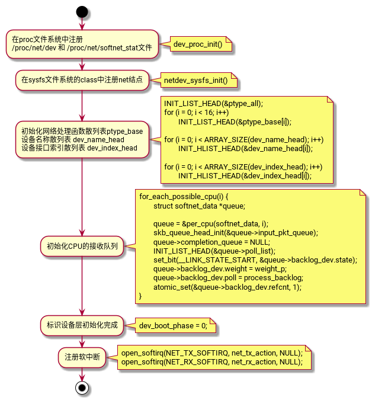
2. PCI设备
2.1. 数据结构
2.1.1. pci_device_id
struct pci_device_id { /* Vendor：厂商ID device：设备ID */ __u32 vendor, device; __u32 subvendor, subdevice; /* 使得驱动程序可以指定支持某一种PIC类设备 */ __u32 class, class_mask; //设备的私有信息 kernel_ulong_t driver_data; };
e100型设备的示例：
#define PCI_DEVICE(vend,dev) \ .vendor = (vend), .device = (dev), \ .subvendor = PCI_ANY_ID, .subdevice = PCI_ANY_ID #define INTEL_E1000_ETHERNET_DEVICE(device_id) {\ PCI_DEVICE(PCI_VENDOR_ID_INTEL, device_id)} static struct pci_device_id e1000_pci_tbl[] = { INTEL_E1000_ETHERNET_DEVICE(0x1000), //...... INTEL_E1000_ETHERNET_DEVICE(0x10C4), INTEL_E1000_ETHERNET_DEVICE(0x10C5), /* required last entry */ {0,} }; #define MODULE_DEVICE_TABLE(type,name) \ MODULE_GENERIC_TABLE(type##_device,name) #define MODULE_GENERIC_TABLE(gtype,name) \ extern const struct gtype##_id __mod_##gtype##_table \ __attribute__ ((unused, alias(__stringify(name)))) /* 为e100_id_table 创建了一个别名为 __mod_pci_table的局部变量 */ MODULE_DEVICE_TABLE(pci, e1000_pci_tbl);
MODULE_DEVICE_TABLE会将驱动支持的设备信息导出到用户空间， 上面的示例导出了 __mod_pci_table 符号。 depmod进程在所有模块中搜索符号 __mod_pci_table。
2.1.2. pci_driver
pci_driver结构用来描述一个PCI设备，定义pic层和设备驱动程序之间的接口。
struct pci_driver { struct list_head node; /* 驱动程序名称 */ const char *name; /* id向量, 内核用于把一些设备关联到此驱动程序 */ const struct pci_device_id *id_table; /* 当pci发现正在查找驱动程序的设备的id和上面的id_table 匹配, 会调用此函数 此函数应当开启硬件, 分配net_device结构, 初始化并注册新设备,分配所需的数据结构 */ int (*probe)(struct pci_dev *dev, const struct pci_device_id *id); /* 当内核移除驱动程序或者热插拔设备移除时, pci调用此函数, 用于清理工作 网络设备使用此函数来释放分配的I/O端口和I/O内存,为设备除名, 释放net_device结构和probe函数分配的数据结构 */ void (*remove)(struct pci_dev *dev); /* 设备挂起时调用*/ int (*suspend)(struct pci_dev *dev, pm_message_t state); int (*suspend_late) (struct pci_dev *dev, pm_message_t state); int (*resume_early) (struct pci_dev *dev); /* 设备唤醒时调用 */ int (*resume)(struct pci_dev *dev); /* 关机时调用 */ void (*shutdown)(struct pci_dev *dev); struct pci_error_handlers *err_handler; /* 驱动模型结构 */ struct device_driver driver; /* 动态添加的设备ID列表*/ struct pci_dynids dynids; int multithread_probe; };
2.2. 注册PCI驱动程序
以e1000为例：
static int e1000_probe(struct pci_dev *pdev, const struct pci_device_id *ent) {} static int e1000_suspend(struct pci_dev *pdev, pm_message_t state) {} static void e1000_shutdown(struct pci_dev *pdev) {} static struct pci_error_handlers e1000_err_handler = { .error_detected = e1000_io_error_detected, .slot_reset = e1000_io_slot_reset, .resume = e1000_io_resume, }; static struct pci_driver e1000_driver = { .name = e1000_driver_name, .id_table = e1000_pci_tbl, .probe = e1000_probe, .remove = __devexit_p(e1000_remove), #ifdef CONFIG_PM /* Power Managment Hooks */ .suspend = e1000_suspend, .resume = e1000_resume, #endif .shutdown = e1000_shutdown, .err_handler = &e1000_err_handler }; static int __init e1000_init_module(void) { ret = pci_register_driver(&e1000_driver); } static void __exit e1000_exit_module(void) { pci_unregister_driver(&e1000_driver); } module_init(e1000_init_module); module_exit(e1000_exit_module);
3. 网络设备相关的数据结构
3.1. net_device
struct net_device { //网络设备名称 char name[IFNAMSIZ]; //名称散列表的元素 struct hlist_node name_hlist; //网络设备共享内存的结束地址 和 起始地址 unsigned long mem_end; unsigned long mem_start; //设备的中断号 unsigned long base_addr; unsigned int irq; //为设备分配的DMA通道 unsigned char dma; //设备状态， 见 enum netdev_state_t unsigned long state; //连接所有net_device结构的链表元素 struct net_device *next; //驱动程序的初始化函数，如果设置，会由 register_netdev()调用 int (*init)(struct net_device *dev); /* ------- Fields preinitialized in Space.c finish here ------- */ /* 接口支持的特性 */ unsigned long features; #define NETIF_F_SG 1 /* SG类型的聚合分散I/O标志 */ #define NETIF_F_IP_CSUM 2 /* 仅能校验IP数据报 */ #define NETIF_F_NO_CSUM 4 /* 不需要执行校验和 */ #define NETIF_F_HW_CSUM 8 /* 有硬件进行校验 */ #define NETIF_F_HIGHDMA 32 /* 可以在高端内存区使用DMA */ #define NETIF_F_FRAGLIST 64 /* FRAGLIST类型的聚合分散I/O标志 */ #define NETIF_F_HW_VLAN_TX 128 /* 支持传输VLAN硬件加速 */ #define NETIF_F_HW_VLAN_RX 256 /* 支持接受VLAN硬件加速 */ #define NETIF_F_HW_VLAN_FILTER 512 /* 支持VLAN接收过滤 */ #define NETIF_F_VLAN_CHALLENGED 1024 #define NETIF_F_GSO 2048 /* 标识设备支持GSO */ #define NETIF_F_LLTX 4096 /* 无锁传输 */ /* Segmentation offload features */ #define NETIF_F_GSO_SHIFT 16 #define NETIF_F_GSO_MASK 0xffff0000 #define NETIF_F_TSO (SKB_GSO_TCPV4 << NETIF_F_GSO_SHIFT) #define NETIF_F_UFO (SKB_GSO_UDP << NETIF_F_GSO_SHIFT) #define NETIF_F_GSO_ROBUST (SKB_GSO_DODGY << NETIF_F_GSO_SHIFT) #define NETIF_F_TSO_ECN (SKB_GSO_TCP_ECN << NETIF_F_GSO_SHIFT) #define NETIF_F_TSO6 (SKB_GSO_TCPV6 << NETIF_F_GSO_SHIFT) /* List of features with software fallbacks. */ #define NETIF_F_GSO_SOFTWARE (NETIF_F_TSO | NETIF_F_TSO_ECN | NETIF_F_TSO6) #define NETIF_F_GEN_CSUM (NETIF_F_NO_CSUM | NETIF_F_HW_CSUM) #define NETIF_F_ALL_CSUM (NETIF_F_IP_CSUM | NETIF_F_GEN_CSUM) //用于链接已经调度有数据包输出的网络设备指针 struct net_device *next_sched; int ifindex; //网络设备索引号 int iflink; //网络设备唯一标识 //获取接口统计信息的函数 struct net_device_stats* (*get_stats)(struct net_device *dev); //... //ethtool的操作接口 const struct ethtool_ops *ethtool_ops; //标识接口特性 IFF_UP IFF_BROADCAST ... unsigned int flags; /* interface flags (a la BSD) */ unsigned short gflags; unsigned short priv_flags; /* Like 'flags' but invisible to userspace. */ unsigned short padded; /* 由alloc_netdev()填充的字节数（32字节对齐） */ //...... unsigned mtu; /* 接口MTU */ unsigned short type; /* 接口硬件类型，以太网为 ARPHDR_ETHER*/ unsigned short hard_header_len; /* 硬件首部长度 */ //指向bonding的虚拟网络设备 struct net_device *master; unsigned char perm_addr[MAX_ADDR_LEN]; /* 硬件地址*/ unsigned char addr_len; /* 硬件地址长度*/ unsigned short dev_id; /* for shared network cards */ struct dev_mc_list *mc_list; /* 组播mac地址 */ int mc_count; /* 组播地址数量 */ int promiscuity; //混杂模式计数器 int allmulti; /* 特定协议族相关的配置块 */ void *atalk_ptr; /* AppleTalk link */ void *ip_ptr; /* IPv4 specific data */ void *dn_ptr; /* DECnet specific data */ void *ip6_ptr; /* IPv6 specific data */ void *ec_ptr; /* Econet specific data */ void *ax25_ptr; /* AX.25 specific data */ /* * Cache line mostly used on receive path (including eth_type_trans()) */ //链接到softnet_data的poll_list成员 struct list_head poll_list ____cacheline_aligned_in_smp; //NAPI驱动程序需要提供pool方法，用来轮询接口。 int (*poll) (struct net_device *dev, int *quota); int quota; //读取数据包的配额 int weight; //输入软中断中，单个网络设备读取数据包的配额 unsigned long last_rx; /* 上次接收数据包的时间 */ unsigned char dev_addr[MAX_ADDR_LEN]; unsigned char broadcast[MAX_ADDR_LEN]; /* * Cache line mostly used on queue transmit path (qdisc) */ /* 设备队列操作自旋索 */ spinlock_t queue_lock ____cacheline_aligned_in_smp; struct Qdisc *qdisc;//当前使用的排队规则 struct Qdisc *qdisc_sleeping;//当前配置的排队规则 struct list_head qdisc_list;//记录所有的排队规则 unsigned long tx_queue_len; /* 队列允许的最大数据包长度 */ /* 经过软分割的GSO数据包，在输出流量控制过程的软中断中，输出第一个数据包时，后续数据包暂时缓存到该成员 */ struct sk_buff *gso_skb; spinlock_t ingress_lock; struct Qdisc *qdisc_ingress;//输入数据包的排队规则 /* * One part is mostly used on xmit path (device) */ /* 发送数据包自旋索 */ spinlock_t _xmit_lock ____cacheline_aligned_in_smp; //正通过该网络设备发送数据包的CPU int xmit_lock_owner; void *priv; /*私有数据*/ int (*hard_start_xmit) (struct sk_buff *skb, struct net_device *dev); /*最近一次输出数据包的时间*/ unsigned long trans_start; int watchdog_timeo; /* used by dev_watchdog() */ struct timer_list watchdog_timer; /* * refcnt is a very hot point, so align it on SMP */ /* 该设备的引用计数 */ atomic_t refcnt ____cacheline_aligned_in_smp; /* 用于链接到net_todo_list 链表 */ struct list_head todo_list; /* 网络设备索引hash表的元素 */ struct hlist_node index_hlist; /* register/unregister state machine */ enum { NETREG_UNINITIALIZED=0, //初始化状态 NETREG_REGISTERED, /* 完成网络设备的注册*/ NETREG_UNREGISTERING, /* 正在注销设备 */ NETREG_UNREGISTERED, /* 完成设备的注销，但还未释放*/ NETREG_RELEASED, /* 即将释放网络设备 */ } reg_state; /* 由unregister_netdevice()调用 */ void (*uninit)(struct net_device *dev); /* Called after last user reference disappears. */ void (*destructor)(struct net_device *dev); /* 启用设备时调用的函数 */ int (*open)(struct net_device *dev); //关闭设备时调用的函数 int (*stop)(struct net_device *dev); #define HAVE_NETDEV_POLL //以太网为eth_header() int (*hard_header) (struct sk_buff *skb, struct net_device *dev, unsigned short type, void *daddr, void *saddr, unsigned len); //传输数据包前，重建硬件首部 int (*rebuild_header)(struct sk_buff *skb); //更新设备的组播地址列表 void (*set_multicast_list)(struct net_device *dev); //修改硬件地址 int (*set_mac_address)(struct net_device *dev, void *addr); //ioctl功能接口 int (*do_ioctl)(struct net_device *dev, struct ifreq *ifr, int cmd); //修改设备的配置接口 int (*set_config)(struct net_device *dev, struct ifmap *map); //根据ARP查询结构填充hh_cache结构 int (*hard_header_cache)(struct neighbour *neigh, struct hh_cache *hh); //更新hh_cache结构的目的地址 void (*header_cache_update)(struct hh_cache *hh, struct net_device *dev, unsigned char * haddr); int (*change_mtu)(struct net_device *dev, int new_mtu); //数据包在指定时间内传输失败，调用该接口 void (*tx_timeout) (struct net_device *dev); //... //从skb获取源mac地址 int (*hard_header_parse)(struct sk_buff *skb, unsigned char *haddr); int (*neigh_setup)(struct net_device *dev, struct neigh_parms *); //网络设备的netpoll信息 struct netpoll_info *npinfo; void (*poll_controller)(struct net_device *dev); /* 桥接相关 */ struct net_bridge_port *br_port; /* sys文件系统中 class/net/name 项 */ struct class_device class_dev; struct attribute_group *sysfs_groups[3]; };
- __LINK_STATE_XOFF 由于热插拔网络设备、缓存不够、网络设备硬件错误或者关闭禁止硬件，而关闭排队功能。
- __LINK_STATE_START 网络设备处于激活状态。
- __LINK_STATE_PRESENT 系统处于待机时，需要挂起各个设备，同时记录设备待机前的状态，表示网络设备对系统是可用的。 此标志用来记录待机前的设备状态，是的系统恢复时判断是否需要启动设备。
- __LINK_STATE_SCHED 标识网络驱动的数据发送是否在流量控制的调度中。
- __LINK_STATE_NOCARRIER 标识网络设备是否处于可传递状态，当网络设备不能传递数据时被设置。（网线拔出）
- __LINK_STATE_RX_SCHED 标识正在轮询接收数据包，此状态下即使有新中断产生，也不会调度软中断。
- __LINK_STATE_LINKWATCH_PENDING 网络设备的连接状态发生改变，正处理改变事件的过程中。
- __LINK_STATE_DORMANT
- __LINK_STATE_QDISC_RUNNING 进行流量控制，处于调度队列的过程中。
3.2. 网络设备结构的关联
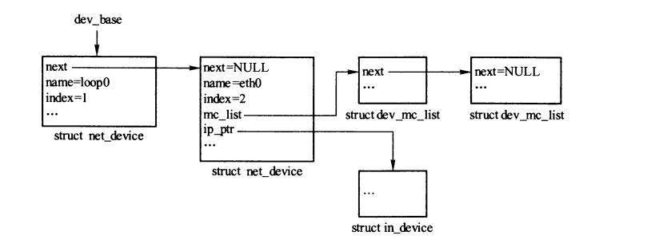
Figure 1: net_device结构与in_device结构的关系
ipv4相关的配置信息存放在 in_device结构中，net_device的ip_ptr指向in_device结构的实例。
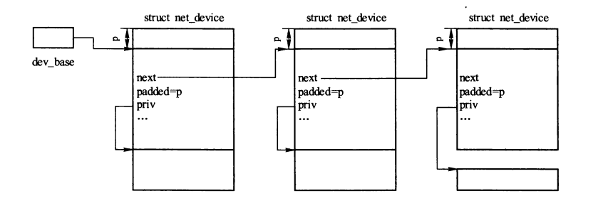
Figure 2: 已注册设备全局链表
- 调用alloc_netdev()分配net_device结构时，传递所需私有数据的长度，可以紧邻net_device分配。
- 驱动程序也可以自己分配私有数据。
- dev_base和net_device的next指针指向net_device结构的开始，而非内存块的开始。
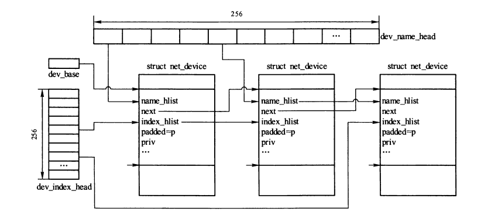
Figure 3: 基于设备名和设备ID的hash表
3.3. 相关函数
struct net_device *dev_get_by_name(const char *name); struct net_device *dev_get_by_index(int ifindex); struct net_device *dev_getfirstbyhwtype(unsigned short type); struct net_device *dev_getbyhwaddr(unsigned short type, char *ha);
4. 网络设备的注册
4.1. 注册时机
- 加载网络设备驱动程序
- 插入可插拔网络设备
4.2. 分配net_device结构
4.2.1. alloc_netdev()
struct net_device *alloc_netdev(int sizeof_priv, const char *name, void (*setup)(struct net_device *)) { void *p; struct net_device *dev; int alloc_size; /* ensure 32-byte alignment of both the device and private area */ alloc_size = (sizeof(*dev) + NETDEV_ALIGN_CONST) & ~NETDEV_ALIGN_CONST; alloc_size += sizeof_priv + NETDEV_ALIGN_CONST; p = kzalloc(alloc_size, GFP_KERNEL); dev = (struct net_device *) (((long)p + NETDEV_ALIGN_CONST) & ~NETDEV_ALIGN_CONST); dev->padded = (char *)dev - (char *)p; if (sizeof_priv) dev->priv = netdev_priv(dev); setup(dev); strcpy(dev->name, name); return dev; }
4.2.2. alloc_etherdev()
alloc_netdev()的封装函数
struct net_device *alloc_etherdev(int sizeof_priv) { return alloc_netdev(sizeof_priv, "eth%d", ether_setup); }
4.2.3. ether_setup()
void ether_setup(struct net_device *dev) { dev->change_mtu = eth_change_mtu; dev->hard_header = eth_header; dev->rebuild_header = eth_rebuild_header; dev->set_mac_address = eth_mac_addr; dev->hard_header_cache = eth_header_cache; dev->header_cache_update= eth_header_cache_update; dev->hard_header_parse = eth_header_parse; dev->type = ARPHRD_ETHER; dev->hard_header_len = ETH_HLEN; dev->mtu = ETH_DATA_LEN; dev->addr_len = ETH_ALEN; dev->tx_queue_len = 1000; /* Ethernet wants good queues */ dev->flags = IFF_BROADCAST|IFF_MULTICAST; memset(dev->broadcast, 0xFF, ETH_ALEN); }
4.3. 网络设备注册过程
以e1000网络驱动程序为例：

register_netdev 是 register_netdevice()的封装函数。
int register_netdev(struct net_device *dev) { int err; rtnl_lock(); if (strchr(dev->name, '%')) { err = dev_alloc_name(dev, dev->name); if (err < 0) goto out; } err = register_netdevice(dev); out: rtnl_unlock(); return err; }
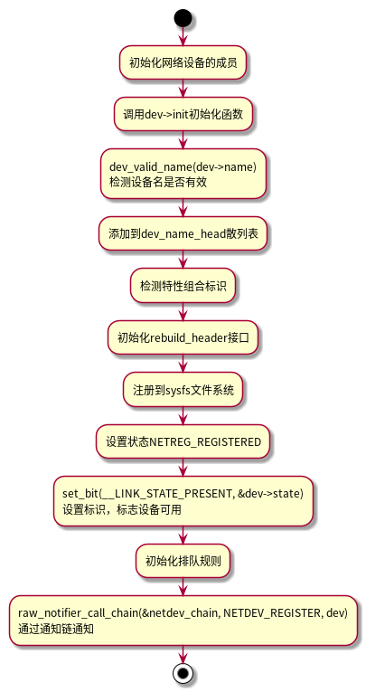
4.4. 注册设备的状态迁移
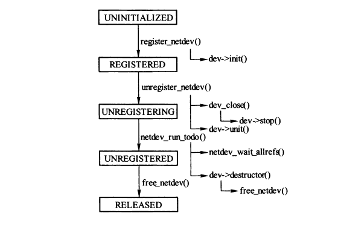
Figure 4: 网络设备注册状态
4.5. 设备注册状态通知
4.5.1. netdev_chain通知链
通过 register_netdevice_notifier() 函数注册网络设备事件的通知链。
注意：注册到通知链时，register_netdevice_notifier() 会将以前的 NETDEV_REGISTER 和 NETDEV_UP 通知重发给系统中当前注册的模块。
4.5.2. netlink通知
当设备状态或配置改变时，通知被发送到 RTMPGRP_LINE 组播组中。
4.6. 引用计数
注册时，引用计数初始化为1。
dev_hole()
dev_put()
5. 网络设备注销
5.1. 注销时机
- 卸载网络设备驱动程序
- 移除网络热插拔设备
5.2. 注销过程
5.2.1. unregister_netdevice()
unregister_netdevice()函数用来完成注销过程。
以e1000为例：
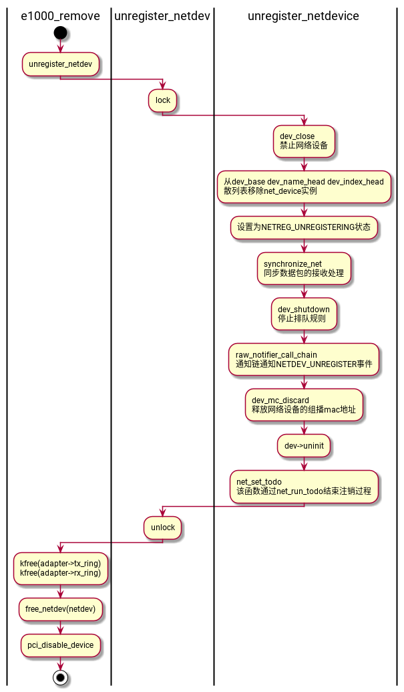
5.2.2. netdev_run_todo()
unregister_netdevice()完成工作后，调用 net_set_todo() 将完成注销的 net_device 结构的实例加入到 net_todo_list 中，此链表包含了已经注销结束的设备。
net_run_todo() 函数处理net_todo_list链表的设备，用于继续处理相关的注销操作。
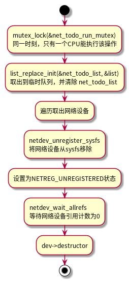
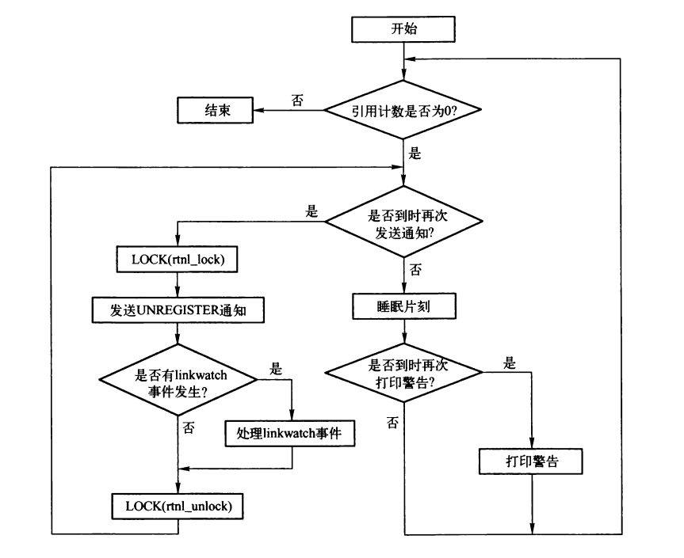
Figure 5: netdev_wait_allrefs()
5.3. 启用网络设备
设备注册后就可以使用，需要在用户空间使能之后才可以收发数据。例如通过 ifconfig eth0 up命令激活。
dev_open函数用来激活设备，并发送 NETDEV_UP 事件到通知链。
int dev_open(struct net_device *dev) { int ret = 0; if (dev->flags & IFF_UP) return 0; //设备挂起，则不能激活 if (!netif_device_present(dev)) return -ENODEV; set_bit(__LINK_STATE_START, &dev->state); if (dev->open) { ret = dev->open(dev); if (ret) clear_bit(__LINK_STATE_START, &dev->state); } if (!ret) { dev->flags |= IFF_UP;//设置激活标志 dev_mc_upload(dev); //更新组播地址列表 dev_activate(dev); //初始化流量控制的排队规则 //发送NETDEV_UP到通知链 raw_notifier_call_chain(&netdev_chain, NETDEV_UP, dev); } return ret; }
5.4. 禁用网络设备
int dev_close(struct net_device *dev) { if (!(dev->flags & IFF_UP)) return 0; //发送NETDEV_GOING_DOWN到通知链 raw_notifier_call_chain(&netdev_chain, NETDEV_GOING_DOWN, dev); //停止队列规则 dev_deactivate(dev); clear_bit(__LINK_STATE_START, &dev->state); smp_mb__after_clear_bit(); /* Commit netif_running(). */ //如果正在轮询接收数据包，则等待 while (test_bit(__LINK_STATE_RX_SCHED, &dev->state)) { /* No hurry. */ msleep(1); } if (dev->stop) dev->stop(dev); dev->flags &= ~IFF_UP; //发送NETDEV_DOWN到通知链 raw_notifier_call_chain(&netdev_chain, NETDEV_DOWN, dev); return 0; }
6. 电源管理
static struct pci_driver e1000_driver = { .name = e1000_driver_name, .id_table = e1000_pci_tbl, .probe = e1000_probe, .remove = __devexit_p(e1000_remove), #ifdef CONFIG_PM /* Power Managment Hooks */ .suspend = e1000_suspend, .resume = e1000_resume, #endif .shutdown = e1000_shutdown, .err_handler = &e1000_err_handler };
- 挂起设备调用pci_driver->suspend
- 唤醒设备调用pci_driver->resume
7. 侦测设备的连接状态
网络设备会定时侦测是否处于可传递状态，如果发生变化调用 netif_carrier_on 和 netif_carrier_off 来通知内核。
void netif_carrier_on(struct net_device *dev) { if (test_and_clear_bit(__LINK_STATE_NOCARRIER, &dev->state)) linkwatch_fire_event(dev); if (netif_running(dev)) __netdev_watchdog_up(dev); } void netif_carrier_off(struct net_device *dev) { if (!test_and_set_bit(__LINK_STATE_NOCARRIER, &dev->state)) linkwatch_fire_event(dev); }
- linkwatch_fire_event()用于将新事件加入队列。
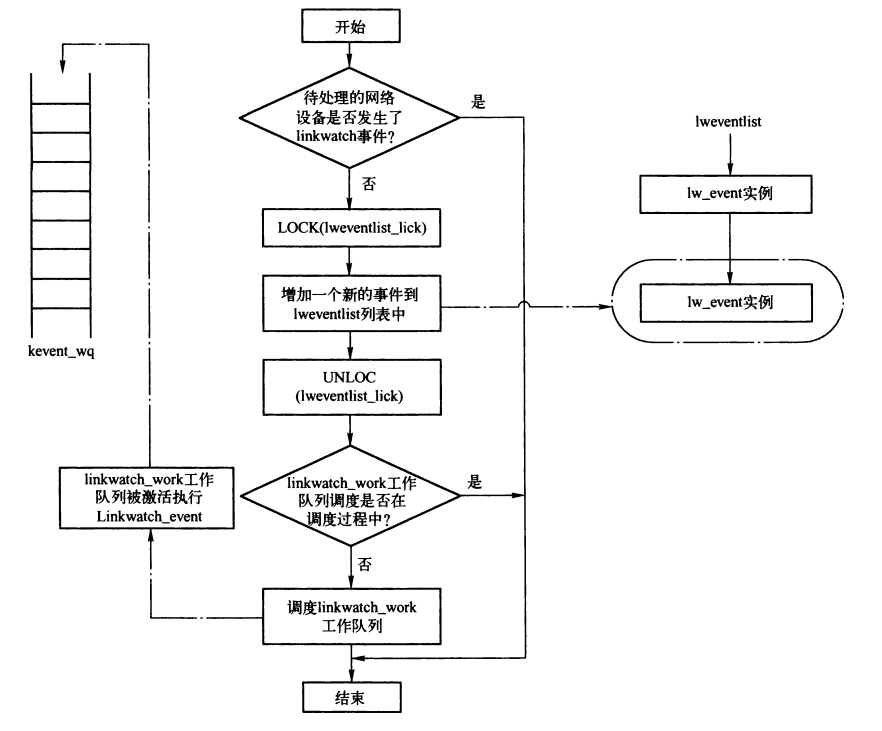
Figure 6: linkwatch_fire_event()流程
- linkwatch_event() 是 linkwatch_work工作队列的例程。
static void linkwatch_event(struct work_struct *dummy) { linkwatch_nextevent = jiffies + HZ; clear_bit(LW_RUNNING, &linkwatch_flags); rtnl_lock(); linkwatch_run_queue(); rtnl_unlock(); }
- linkwatch_run_queue() 函数遍历所有连接状态改变事件。
void linkwatch_run_queue(void) { struct list_head head, *n, *next; spin_lock_irq(&lweventlist_lock); list_replace_init(&lweventlist, &head);//取出链表到临时的head spin_unlock_irq(&lweventlist_lock); list_for_each_safe(n, next, &head) {//遍历处理链表的事件 struct lw_event *event = list_entry(n, struct lw_event, list); struct net_device *dev = event->dev; if (event == &singleevent) { clear_bit(LW_SE_USED, &linkwatch_flags); } else { kfree(event); } //清除__LINK_STATE_LINKWATCH_PENDING，表示又可以接收连接状态改变事件了 clear_bit(__LINK_STATE_LINKWATCH_PENDING, &dev->state); rfc2863_policy(dev); if (dev->flags & IFF_UP) { if (netif_carrier_ok(dev)) { WARN_ON(dev->qdisc_sleeping == &noop_qdisc); dev_activate(dev);//激活排队规则 } else dev_deactivate(dev);//关闭排队规则 netdev_state_change(dev); } dev_put(dev);//释放引用 } }
8. 配置设备
8.1. ethtool

Figure 7: 配置设备的ioctl接口
ethtool 工具最终调用dev->ethtool_ops 操作接口。
对于不支持 ethool 的驱动，会尝试调用 dev->do_ioctl() 进行处理。
9. 虚拟网络设备
虚拟网络设备是建立在一个或多个真实设备之上的抽象，其对应关系可以一对一、多对一、一对多。
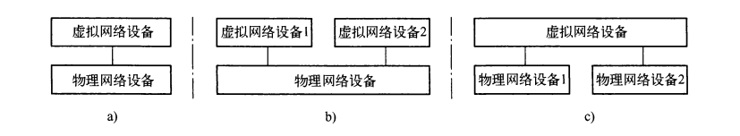
Figure 8: 虚拟设备和物理设备的关系
| 虚拟网络设备类型 | 描述 |
|---|---|
| Bonding | 虚拟设备捆绑多个物理设备，将其视为一个设备使用 |
| 802.1Q | VLAN，可以用于定义虚拟局域网 |
| Bridging | 桥虚拟设备 |
| Tunnel interfaces | 用于实现 IP-over-IP隧道或者通用路由封装（GRE）协议 |